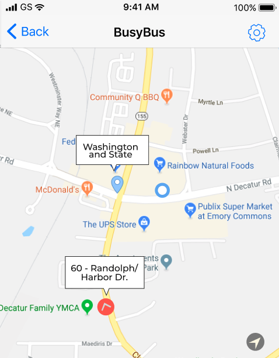

Washington and State
0.5 mi
Eastbound
60
Randolph/Harbor Dr.
2 mins
124
Navy Pier
7 mins
Southbound
J14
103rd/Stony Island
8 mins
Northbound
151
Devon/Clark
10 mins
Southbound
124
Navy Pier
15 mins
Reroute
6x
Jackson Park Express
N/A
Out of Service
4
Cottage Grove
Resumes 12:10am
20
Madison
Resumes 12:10am
157
Streeterville/Taylor
Resumes 6:00am